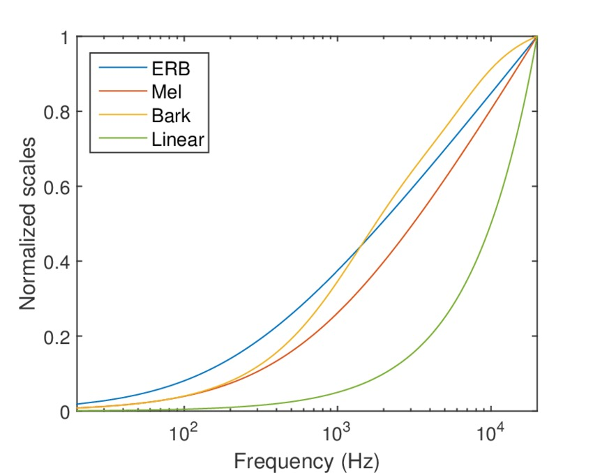
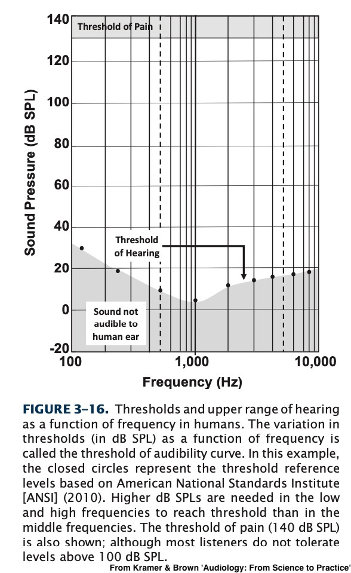
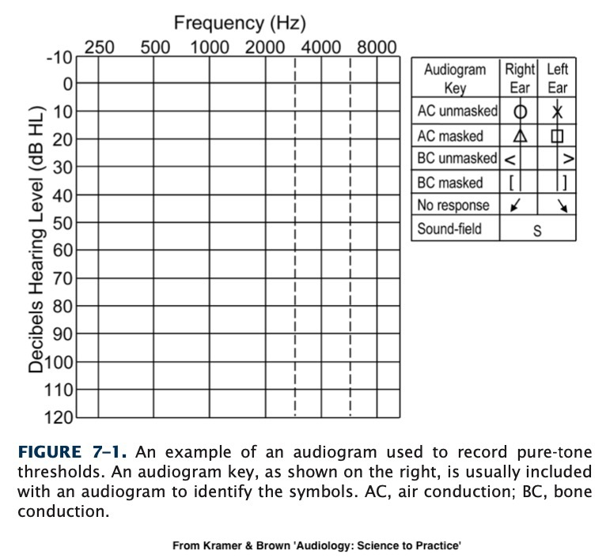
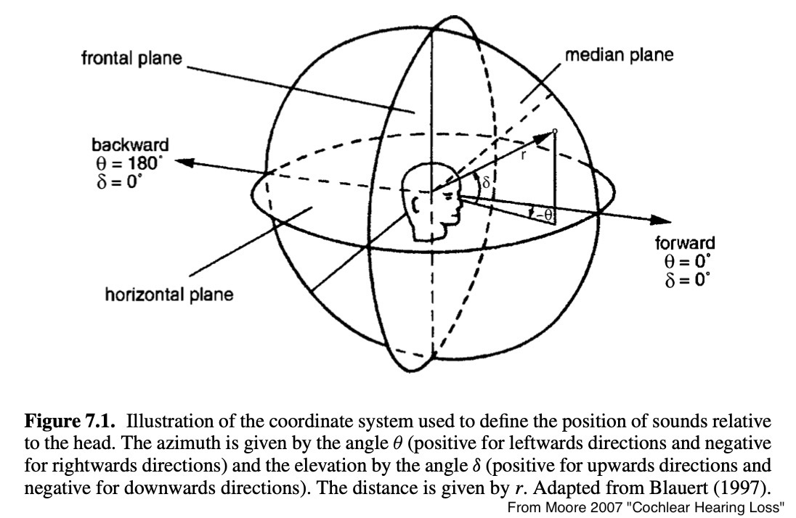
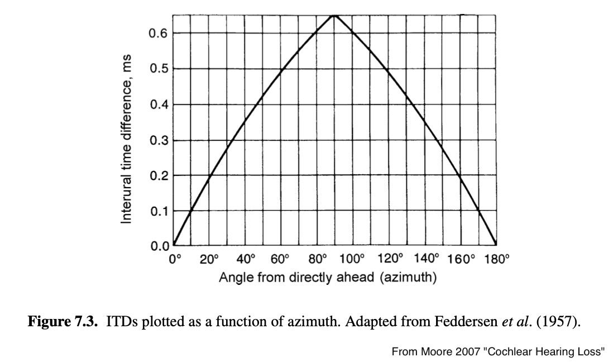
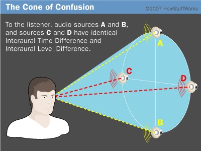

# Pitch, Loudness, and Localization ### Will Styler - LIGN 113 --- ### Today's Plan - Perception of Frequency - Mel and Bark Scaling - Perception of Loudness - Equal Loudness Contours - Perception of Location - Vertical and Horizontal Localization --- ## Perception of Frequency --- ### Our perception of frequency is non-linear - We now know a bunch of reasons!<img class="r-stretch" src="hearing/basilar_tonotopic.jpg"> --- ### Differences in critical frequency bands <img class="r-stretch" src="hearing/masking_filterbandwidth.jpg"> --- ### Evolutionary Differences! - We care primarily about ~80-4000Hz! --- ### ... but Hertz doesn't capture this at all - Hertz captures cycles per second - ... but not our perception of frequency! --- ### Our perception of frequency is weird! - We've already talked about auditory masking - Two sounds within the same 'critical band' seem like one sound - We also percieve jumps in frequency non-linearly --- ### Do we hear frequency in a linear and reliable way? Is the jump in file A the same as in file B? A. <audio controls src="phonmedia/jump_400_600.wav"></audio> B. <audio controls src="phonmedia/jump_10400_10600.wav"></audio> - **Both of these are a 200Hz Jump!** --- Is the jump in file A the same as in file B? A. <audio controls src="phonmedia/jump_400_500.wav"></audio> B. <audio controls src="phonmedia/jump_6400_6500.wav"></audio> - **Both of these are a 100Hz Jump** --- ### So, our perception of frequency isn't Hertz-like - **We want a perceptual scale for hearing!** --- ### Perceptual scales - Mel scaling - Bark scaling --- ### Mel Scale - Maps numerical pitch measures to human perceptions of changes in pitch - People will tell you that a sound's pitch is 'half as high' at x/2 mels relative to x mels - Mel is the dominant perceptual frequency scale in use - It underlies [Mel-Frequency Cepstral Coefficients](http://practicalcryptography.com/miscellaneous/machine-learning/guide-mel-frequency-cepstral-coefficients-mfccs/) which are the dominant processing method in computational linguistics --- ### Mel Scale <img class="r-stretch" src="hearing/mel_scale.jpg"> --- ### Mel Formula - Mel(f) = 1125 \* ln(1+f/700) - f = Frequency in Hertz - This is a natural log - There are multiple formulae! --- ### Bark Scale - The same basic idea, but using the critical bands themselves! - Each 'band' in bark is centered around the psychoacoustic critical bands --- ### Bark Scale <img class="r-stretch" src="hearing/bark_bands.jpg"> --- ### Bark Formula - Bark(f)=13\*arctan(0.00076\*f)+3.5\*arctan((f/(7500))\*(f/(7500))) - f = Frequency in Hertz - Again, there are other formulae! --- ### Bark vs. Mel vs. Equivalent Rectangular Bandwidth  --- ### Which should you use? - Doesn't really matter! - Linguists tend to use Bark - But you'll see Mel too! - **The important part is knowing that we don't hear Hertz linearly!** - You know what else is non-linear? --- ## Amplitude Perception --- ### The auditory system is tuned to amplify some frequencies! <img class="r-stretch" src="hearing/outerear.jpg"> --- ### We've already talked about wanting different units for amplitude - Perceived amplitude is not linear with pressure - Hence using dB, rather than Pascal! --- ### ... and let's not forget the relationship between frequency and amplitude - We don't hear equivalent loudness for equivalent amplitudes at different frequencies --- <img class="r-stretch" src="hearing/equal_loudness_contours.jpg"> --- ### This is the basis of dB HL  --- ### dB HL sets the minimum perceptible amplitude as zero! - Regardless of frequency!  --- ### So, our perception of the basics of sound is... not awesome - Duration - We won't talk about that, but it's cool - Amplitude - Heavily convolved with frequency, and logarithmic! - Frequency (Period, Wavelength) - Oof. - Phase - That's a nope. --- ### ... but that's OK! - Our perception is shaped by our evolution! - The most important ranges for speech and survival are amplified - None of our perceptions of *anything* are accurate --- ### We have nothing but our flawed perceptions to build a model of the world from - Everything you've ever known is just a matrix of perceptual data - You can't prove anything you've ever experienced happened, just that you perceived that it did. - We're just isolated mindstates groping through an invisible world using our strange detectors --- <img class="r-stretch" src="humorimg/dudewaitwhat.jpg"> --- ### Wait, where did that come from? - Which brings us to... --- ## Sound localization? --- ### We want to know where sound came from - "Did that lion just roar from behind me or in front of me?" - "Where is that bird tweeting from?" - "Where did that spring just go?" ---  --- ### We need two kinds of localization - All positions can be calculated based on vertical and horizontal knowledge - So, we just need to figure out two dimensions! --- ### Many animals can change the position of their ears - [Turns out that we still try, even though it doesn't work anymore](https://www.frontiersin.org/journals/neuroscience/articles/10.3389/fnins.2024.1462507/full) - ... but we can't, so we need to figure out how to do... --- ## Horizontal Localization --- ### We use two sources of data for horizontal localization - Both rely on *binaural* information - Differences in *timing* between ears - Differences in *loudness* between ears --- ### Time-of-arrival differences <img class="r-stretch" src="hearing/localization_horizontal_arrival.jpg"> --- ### Interaural Time Differences  --- ### Interaural Amplitude differences <img class="r-stretch" src="hearing/localization_horizontal.jpg"> --- ### Think about a post in the water... --- ### Interaural Level Differences <img class="r-stretch" src="hearing/localization_ild.jpg"> --- ### Both play a role - Interaural time differences are used mostly in low frequencies - Interaural amplitude differences are usable only in high frequencies - The trade-off happens around 1 kHz --- ### This is acquired - Each time my hearing changed, I re-learned where sounds are! - Primarily at higher frequencies - Take a second to ponder why... --- ### Binaural effects can only give you horizontal cues - Provided that your head is vertical - How do we get vertical information? --- ## Vertical Localization --- ### For vertical information, we use the pinna <img class="r-stretch" src="hearing/outerear_pinna.jpg"> --- ### Different resonances imply different angles of incidence - These are pinna-specific - You cannot localize sounds recorded with a fake pinna - They also involve the resonances of the neck and shoulders - Pinna cues are most important over 6,000 Hz - [Here's a great paper on vertical localization](https://www.ncbi.nlm.nih.gov/pubmed/24076423) --- ### Localization is hard! - We're best at it directly in front of us - We're pretty bad at it behind us, and directly to our sides --- ### The cone of confusion - These have exactly the same ITD  --- ### There's other information too! - We can move our heads - We can use information from the room - We can use frequency decay over time to judge distance - We can use the doppler effect to identify fast movement - We can identify the source visually --- ### Aside: Localization is hard to preserve - [We're worse at localizing sound when wearing hearing protection](https://www.ncbi.nlm.nih.gov/pubmed/22264060) - ... especially when the pinnae are covered - Modeling this is very, very complex - Surround Sound systems cheat by *actually* playing sounds from different places --- ### There's a lot of research in Localization  --- ### Wrapping Up - Our perceptions of frequency are deeply non-linear - Our perceptions of amplitude are deeply non-linear - Localization is a hard task - Horizontal Localization uses differences in timing and loudness between ears - Vertical localization relies on pinna cues - This is super complicated - ... and an area of major research! --- <huge>Thank you!</huge>